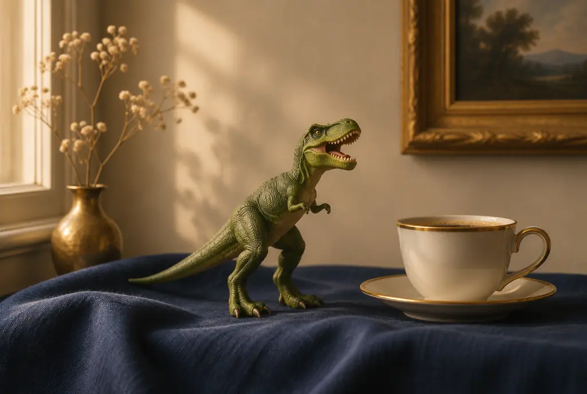
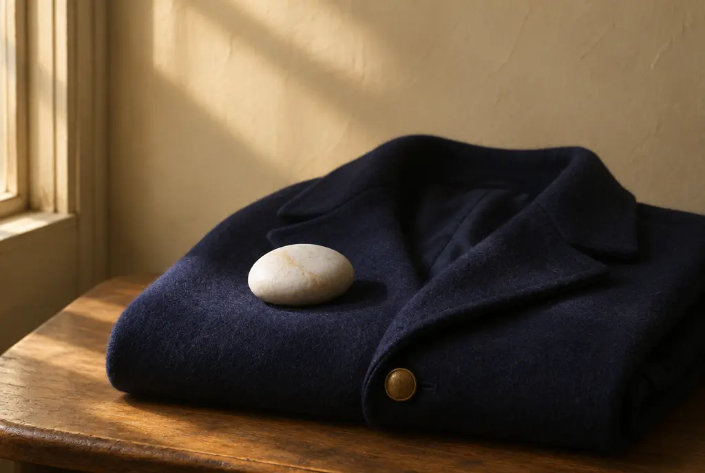

Sei qui con noi, però non mi ascolti
Avevo promesso ai miei figli una vacanza tutta per loro. Poi rispondevo ai messaggi «urgenti». Me l'ha detto il più piccolo, in una frase.
Leggi · 1 min →
Ogni stella è una pagina: toccala per leggerla.
-
24novembre 2026
Lo tenevo e basta
Una notte, mio figlio di sei mesi piangeva. Avevo fatto tutto quello che dicevano i manuali. Mancava una cosa sola, e non era nei manuali.
Leggi · 1 min → -
23novembre 2026
La lumaca
Eravamo in ritardo, e mio figlio si è fermato per una lumaca. Ho aperto la bocca per dire «dai, è tardi». Poi mi sono accovacciato.
Leggi · 1 min → -
22novembre 2026
Cinque minuti di silenzio
Una trattativa ferma da ore, le voci alzate, le posizioni rigide. Invece di un'altra frase, ho proposto di tacere.
Leggi · 1 min →
-
21novembre 2026
Non ora
La domanda di mio figlio da cui è nato un libro, e due parole da dire al mondo quando pretende «sempre e subito».
Leggi · 1 min → -
20novembre 2026
Il mare non si impara
Mio nonno pescatore guardava il mare come si guarda un maestro. Mi ci sono voluti due figli per capire che cosa intendesse.
Leggi · 1 min → -
19novembre 2026
Il carretto della frutta
Tre lezioni imparate d'estate, sotto il sole, aiutando mio nonno a vendere la frutta.
Leggi · 1 min → -
18novembre 2026
Trentasette notifiche
Quando tutto è urgente, niente è davvero importante. Una misura del rumore di oggi.
Leggi · 1 min → -
17novembre 2026
Dove vanno i sogni quando ci svegliamo?
Una domanda fatta in pigiama, e il trucco con cui noi adulti evitiamo di rispondere.
Leggi · 1 min → -
16novembre 2026
Il dinosauro di tutti e due
Due bambini litigano per un tirannosauro di plastica e fanno pace in cinque minuti. Io, dalla soglia della cucina, mi chiedo perché non so fare così.
Leggi · 1 min →
-
15novembre 2026
Il tempo dei sassi
Un sasso bianco in tasca, e una domanda: quand'è l'ultima volta che hai guardato qualcosa con quella attenzione?
Leggi · 1 min →